Evolutionary neurobiology of zooplankton larvae
COS DSCB Introduction, 17 Oct 2025
Centre for Organismal Studies, Heidelberg University
@jekely@biologists.social

Nervous systems evolved in the sea

Platynereis dumerilii

- breeding culture
- microinjection, transgenesis
- neuron-specific promoters and antibodies
- knock-out lines
- neuronal connectome
- neuronal activity imaging
From biophysics to environment
biophysics 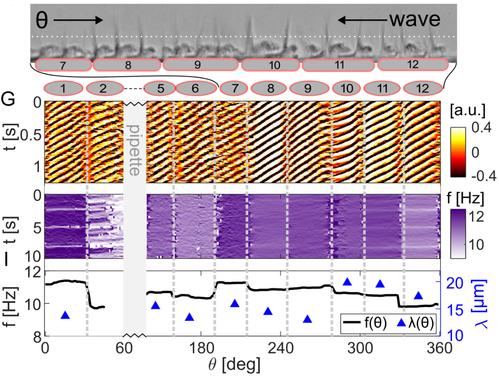
connectomics 
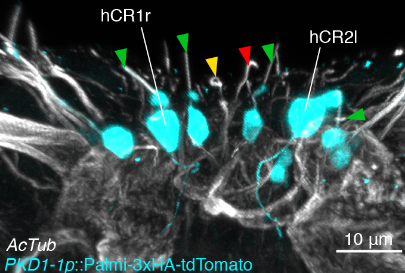 genetics
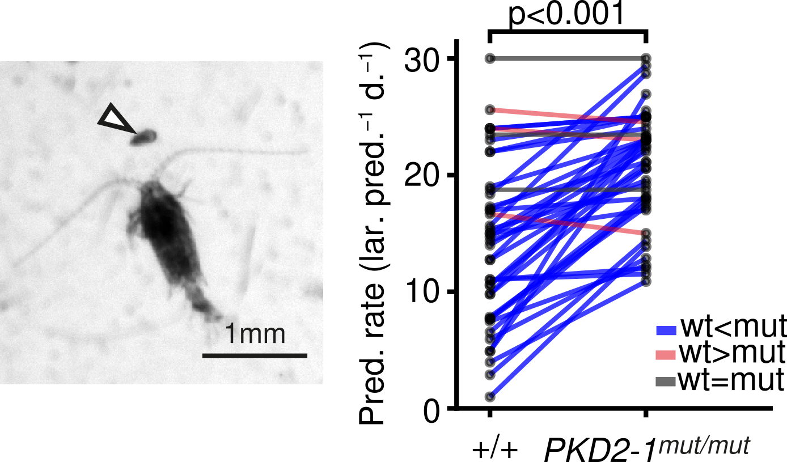environment
Biophysics of ciliary microswimmers

- high-speed ciliary imaging
- laser ablations
- modelling
In collaboration with Wan and Keaveny labs, UK
Array tomography for vEM and connectomics


- 2 Zeiss Gemin SEMs
- Leica UC7 Ultramicrotome
- strong collaboration with EMCF
Information flow from sensors to effectors

UV response in Platynereis larvae

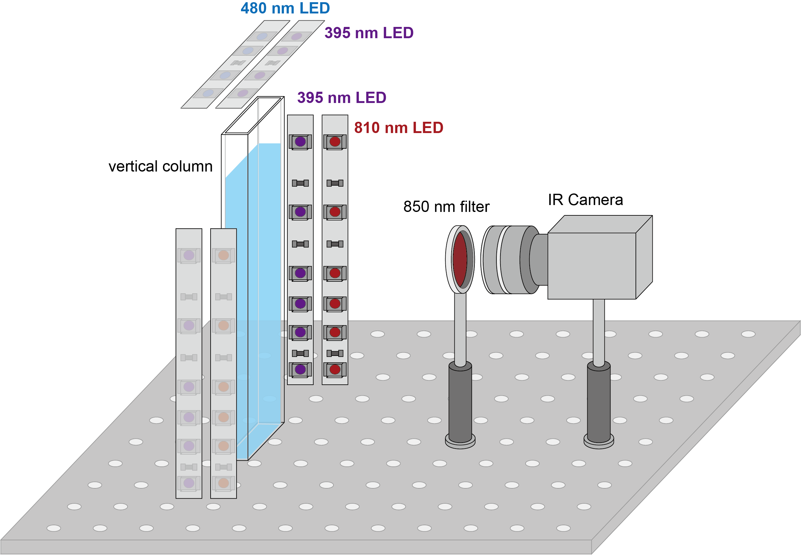

Brain ciliary photoreceptors with ramified cilia

Circuitry of ciliary photoreceptors

Strong cPRC activation after UV exposure
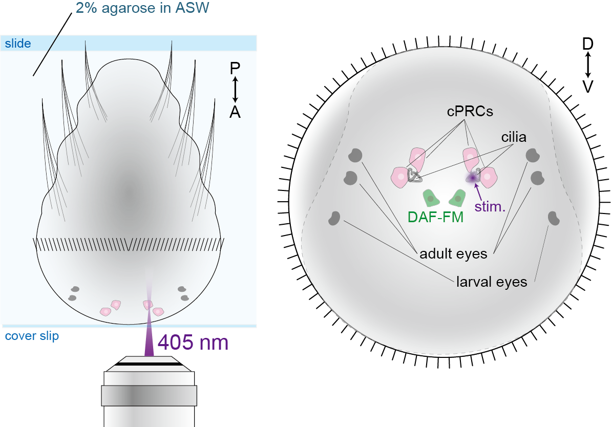 

Nitric-oxide synthase in postsynaptic interneurons

HCR
Transgenic labelling
immunostaining
NOS mutants have defective UV response

 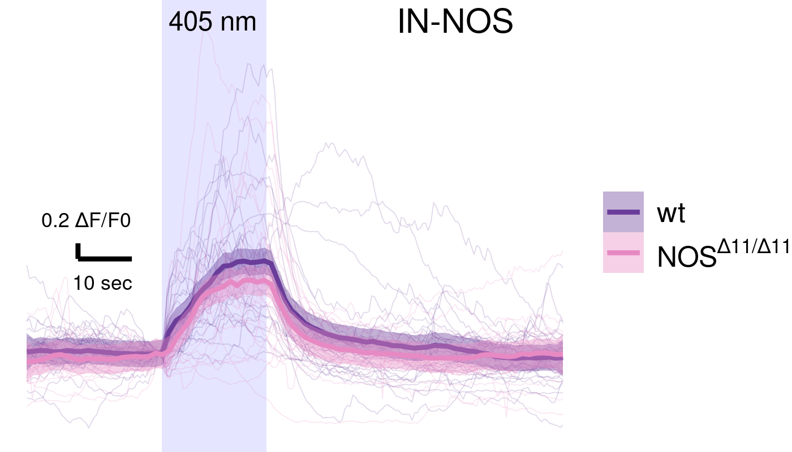 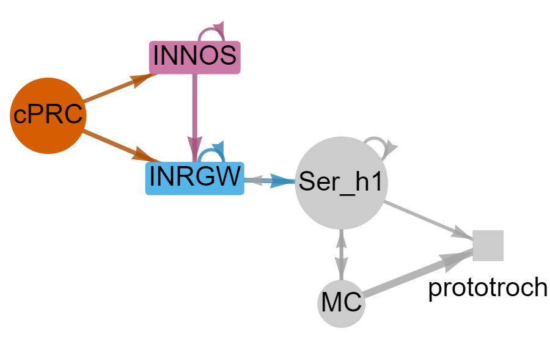
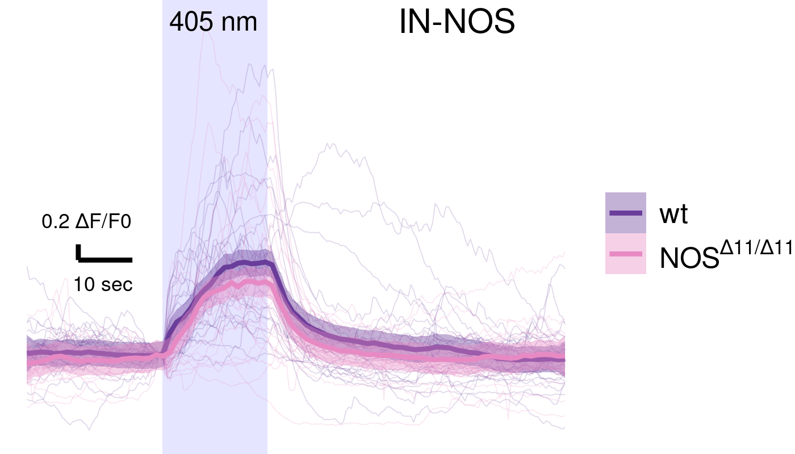 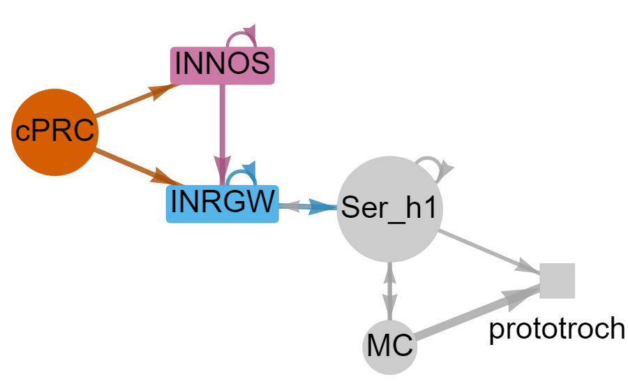
Field trips to explore marine plankton

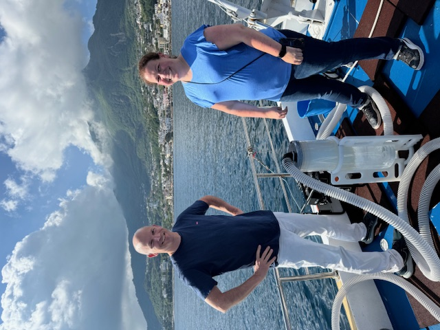
Ischia, Sorgeto, 2024
Field trips lead to unexpected discoveries

with Alexandra Kerbl, Ischia May 31, 2024
What is this?

with Alexandra Kerbl, Ischia May 31, 2024
Comparative vEM & connectomics of marine larvae

- 12 labs (EU, UK)
- vEM of marine invertebrates
- evolution of cell types
- integrate with molecular atlases
Acknowledgements
Lab members
- Alexandra Kerbl
- Karel Mocaer
- David Hug
- Jules Duruz
- Mateusz Kostecki
- Sanja Jasek
- Benedikt Dürr
- Kata Szabó
- Emily Savage
- Simone Wolters
- Kevin Urbansky
- Juli Lenz
- Isabel Parnet
 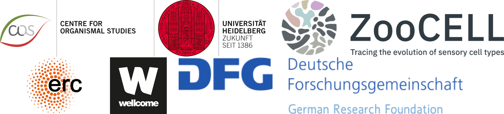
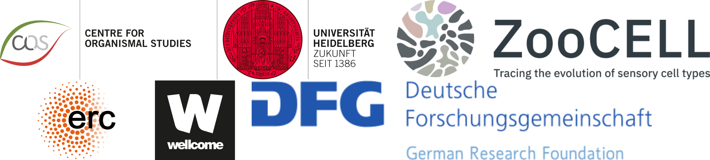
Facilities
- EM Core Facility
- Réza Shahidi
- Charlotta Funaya
- Nikon Imaging Centre
- Ulrike Engel